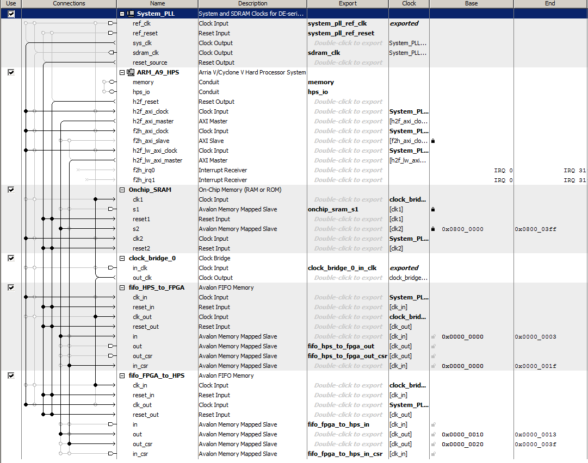
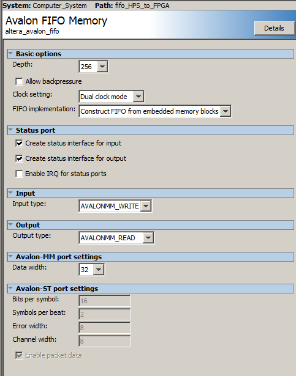
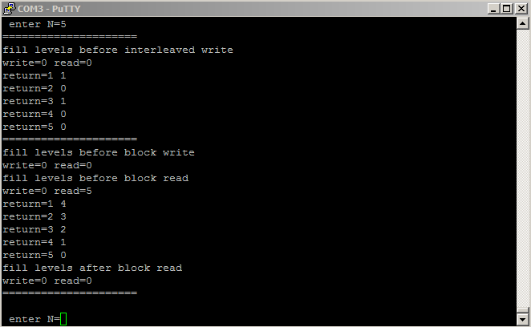

FAILED Processor-FPGA Communication: Using FIFO FPGA Part¶
Warning¶
The approach used in this part, using FIFO provided by Platform Designer(Qsys), has failed due to the lack of proper example from Altera. I will use FIFO component from Quartus Library instead. Please read Processor-FPGA Communication: Using FIFO FPGA Part instead.
Credit¶
- This section is Modified From DE1 SoC ARM HPS and FPGA Addresses and Communication Cornell ece5760
| Date: | 20 Aug 2019 |
|---|
Dependency¶
This part uses parameters in Cornell ECE5760¶
Step 1 We will use Platform Designer to generate two FIFOs, HPS to FPGA FIFO and FPGA to HPS FIFO

- For HPS to FPGA FIFO, its Output will be Exported and will be connected to the Top-Level module DE1_SoC_Computer, please refer to DE1_SoC_Computer verilog file (line 515).
// HPS to FPGA FIFO
.fifo_hps_to_fpga_out_readdata (hps_to_fpga_readdata), // fifo_hps_to_fpga_out.readdata
.fifo_hps_to_fpga_out_read (hps_to_fpga_read), // out.read
.fifo_hps_to_fpga_out_waitrequest (), // out.waitrequest
.fifo_hps_to_fpga_out_csr_address (32'd1), //(hps_to_fpga_out_csr_address), // fifo_hps_to_fpga_out_csr.address
.fifo_hps_to_fpga_out_csr_read (1'b1), //(hps_to_fpga_out_csr_read), // csr.read
.fifo_hps_to_fpga_out_csr_writedata (), // csr.writedata
.fifo_hps_to_fpga_out_csr_write (1'b0), // csr.write
.fifo_hps_to_fpga_out_csr_readdata (hps_to_fpga_out_csr_readdata), // csr.readdata
- To use this Output of HPS to FPGA FIFO, we must write by ourselves a State Machine to handle Reading Data From HPS, please refer to DE1_SoC_Computer verilog file (line 440). Specifically, HPS to FPGA FIFO Reader state machine waits for data in the FIFO, then reads the data into a buffer and sets a ready flag. The csr-register used to wait is the status register, so that only bit 0 (full) and bit 1 (empty) are read
//=================================
// HPS_to_FPGA state machine
//==================================
// Is there data in HPS_to_FPGA FIFO ?
// And the last transfer is complete ?
if (HPS_to_FPGA_state == 8'd0 && !(hps_to_fpga_out_csr_readdata[1]) && !data_buffer_valid) begin
hps_to_fpga_read <= 1'b1 ;
HPS_to_FPGA_state <= 8'd2 ; //
end
// delay
if (HPS_to_FPGA_state == 8'd2) begin
// zero the read request BEFORE the data appears
// in the next state!
hps_to_fpga_read <= 1'b0 ;
HPS_to_FPGA_state <= 8'd4 ;
end
// read the word from the FIFO
if (HPS_to_FPGA_state == 8'd4) begin
data_buffer <= hps_to_fpga_readdata ; // send back data
data_buffer_valid <= 1'b1 ; // set the data ready flag
hps_to_fpga_read <= 1'b0 ;
HPS_to_FPGA_state <= 8'd0 ; //6
end
- For FPGA to HPS FIFO, its Input will be Exported and will be connected to the Top-Level module DE1_SoC_Computer, please refer to DE1_SoC_Computer verilog file (line 525).
// FPGA to HPS FIFO
.fifo_fpga_to_hps_in_writedata (fpga_to_hps_in_writedata), // fifo_fpga_to_hps_in.writedata
.fifo_fpga_to_hps_in_write (fpga_to_hps_in_write), // .write
.fifo_fpga_to_hps_in_csr_address (32'd1), //(fpga_to_hps_in_csr_address), // fifo_fpga_to_hps_in_csr.address
.fifo_fpga_to_hps_in_csr_read (1'b1), //(fpga_to_hps_in_csr_read), // .read
.fifo_fpga_to_hps_in_csr_writedata (), // .writedata
.fifo_fpga_to_hps_in_csr_write (1'b0), // .write
.fifo_fpga_to_hps_in_csr_readdata (fpga_to_hps_in_csr_readdata), //
- To use this Input of FPGA to HPS FIFO, we must write by ourselves a State Machine to handle Writing Data To HPS, please refer to DE1_SoC_Computer verilog file (line 466). Specifically, FPGA to HPS FIFO Writer state machine waits for space in the FPGA to HPS FIFO then writes the data to the FIFO and clears the ready flag
//=================================
// FPGA_to_HPS state machine
//==================================
// Is there space in the FPGA_to_HPS FIFO ?
// And data is available ?
if (FPGA_to_HPS_state==0 && !(fpga_to_hps_in_csr_readdata[0]) && data_buffer_valid) begin
fpga_to_hps_in_writedata <= data_buffer ;
fpga_to_hps_in_write <= 1'b1 ;
FPGA_to_HPS_state <= 8'd4 ;
end
// finish the write to FPGA_to_HPS FIFO
//if (HPS_to_FPGA_state == 8'd8) begin
if (FPGA_to_HPS_state==4) begin
fpga_to_hps_in_write <= 1'b0 ;
data_buffer_valid <= 1'b0 ; // used the data, so clear flag
FPGA_to_HPS_state <= 8'd0 ;
end
Step 2 FIFO Settings
- Note that Allow Backpressure should be off

Step 3 Some Remarks
- Timing for the FIFO read/write is not specified in the users manual! The HPS-to-FPGA read operation takes TWO cycles but the read-enable line can only be held high for ONE cycle, Holding it high for two cycles results in two reads.
- The HPS program asks the user for the number of items to send (0<N<500), reads the fill-level of each of the FIFOs, then prints out the returned values and fill levels.

- For N greater than 256, using block-write, that the FPGA-to-HPS FIFO will fill, then stall, while the HPS-to-FPGA FIFO keeps filling.
- The nonblocking read/write macros in the HPS program are not well tested.
- If you use nonblocking read/write that you must check the return value for success.
This part uses My parameters and DE10_NANO_SoC_GHRD¶


- In the following code, most parts are generated by Terasic System Builder. As for the part I added, they are Surrounded by comments Begin Code added by me and End Code added by me
- Please also read comments Begin Work To Be Done and End Work To Be Done
//=======================================================
// This code is generated by Terasic System Builder
//=======================================================
module DE10_NANO_SoC_GHRD(
//////////// CLOCK //////////
input FPGA_CLK1_50,
input FPGA_CLK2_50,
input FPGA_CLK3_50,
//////////// HDMI //////////
inout HDMI_I2C_SCL,
inout HDMI_I2C_SDA,
inout HDMI_I2S,
inout HDMI_LRCLK,
inout HDMI_MCLK,
inout HDMI_SCLK,
output HDMI_TX_CLK,
output [23: 0] HDMI_TX_D,
output HDMI_TX_DE,
output HDMI_TX_HS,
input HDMI_TX_INT,
output HDMI_TX_VS,
//////////// HPS //////////
inout HPS_CONV_USB_N,
output [14: 0] HPS_DDR3_ADDR,
output [ 2: 0] HPS_DDR3_BA,
output HPS_DDR3_CAS_N,
output HPS_DDR3_CK_N,
output HPS_DDR3_CK_P,
output HPS_DDR3_CKE,
output HPS_DDR3_CS_N,
output [ 3: 0] HPS_DDR3_DM,
inout [31: 0] HPS_DDR3_DQ,
inout [ 3: 0] HPS_DDR3_DQS_N,
inout [ 3: 0] HPS_DDR3_DQS_P,
output HPS_DDR3_ODT,
output HPS_DDR3_RAS_N,
output HPS_DDR3_RESET_N,
input HPS_DDR3_RZQ,
output HPS_DDR3_WE_N,
output HPS_ENET_GTX_CLK,
inout HPS_ENET_INT_N,
output HPS_ENET_MDC,
inout HPS_ENET_MDIO,
input HPS_ENET_RX_CLK,
input [ 3: 0] HPS_ENET_RX_DATA,
input HPS_ENET_RX_DV,
output [ 3: 0] HPS_ENET_TX_DATA,
output HPS_ENET_TX_EN,
inout HPS_GSENSOR_INT,
inout HPS_I2C0_SCLK,
inout HPS_I2C0_SDAT,
inout HPS_I2C1_SCLK,
inout HPS_I2C1_SDAT,
inout HPS_KEY,
inout HPS_LED,
inout HPS_LTC_GPIO,
output HPS_SD_CLK,
inout HPS_SD_CMD,
inout [ 3: 0] HPS_SD_DATA,
output HPS_SPIM_CLK,
input HPS_SPIM_MISO,
output HPS_SPIM_MOSI,
inout HPS_SPIM_SS,
input HPS_UART_RX,
output HPS_UART_TX,
input HPS_USB_CLKOUT,
inout [ 7: 0] HPS_USB_DATA,
input HPS_USB_DIR,
input HPS_USB_NXT,
output HPS_USB_STP,
//////////// KEY //////////
input [ 1: 0] KEY,
//////////// LED //////////
output [ 7: 0] LED,
//////////// SW //////////
input [ 3: 0] SW
);
//=======================================================
// REG/WIRE declarations
//=======================================================
wire hps_fpga_reset_n;
wire [1: 0] fpga_debounced_buttons;
wire [6: 0] fpga_led_internal;
wire [2: 0] hps_reset_req;
wire hps_cold_reset;
wire hps_warm_reset;
wire hps_debug_reset;
wire [27: 0] stm_hw_events;
wire fpga_clk_50;
// connection of internal logics
// assign LED[7: 1] = fpga_led_internal;
assign fpga_clk_50 = FPGA_CLK1_50;
assign stm_hw_events = {{15{1'b0}}, SW, fpga_led_internal, fpga_debounced_buttons};
//=======================================================
// Structural coding
//=======================================================
soc_system u0(
//Clock&Reset
.clk_clk(FPGA_CLK1_50), // clk.clk
.reset_reset_n(hps_fpga_reset_n), // reset.reset_n
//HPS ddr3
.memory_mem_a(HPS_DDR3_ADDR), // memory.mem_a
.memory_mem_ba(HPS_DDR3_BA), // .mem_ba
.memory_mem_ck(HPS_DDR3_CK_P), // .mem_ck
.memory_mem_ck_n(HPS_DDR3_CK_N), // .mem_ck_n
.memory_mem_cke(HPS_DDR3_CKE), // .mem_cke
.memory_mem_cs_n(HPS_DDR3_CS_N), // .mem_cs_n
.memory_mem_ras_n(HPS_DDR3_RAS_N), // .mem_ras_n
.memory_mem_cas_n(HPS_DDR3_CAS_N), // .mem_cas_n
.memory_mem_we_n(HPS_DDR3_WE_N), // .mem_we_n
.memory_mem_reset_n(HPS_DDR3_RESET_N), // .mem_reset_n
.memory_mem_dq(HPS_DDR3_DQ), // .mem_dq
.memory_mem_dqs(HPS_DDR3_DQS_P), // .mem_dqs
.memory_mem_dqs_n(HPS_DDR3_DQS_N), // .mem_dqs_n
.memory_mem_odt(HPS_DDR3_ODT), // .mem_odt
.memory_mem_dm(HPS_DDR3_DM), // .mem_dm
.memory_oct_rzqin(HPS_DDR3_RZQ), // .oct_rzqin
//HPS ethernet
.hps_0_hps_io_hps_io_emac1_inst_TX_CLK(HPS_ENET_GTX_CLK), // hps_0_hps_io.hps_io_emac1_inst_TX_CLK
.hps_0_hps_io_hps_io_emac1_inst_TXD0(HPS_ENET_TX_DATA[0]), // .hps_io_emac1_inst_TXD0
.hps_0_hps_io_hps_io_emac1_inst_TXD1(HPS_ENET_TX_DATA[1]), // .hps_io_emac1_inst_TXD1
.hps_0_hps_io_hps_io_emac1_inst_TXD2(HPS_ENET_TX_DATA[2]), // .hps_io_emac1_inst_TXD2
.hps_0_hps_io_hps_io_emac1_inst_TXD3(HPS_ENET_TX_DATA[3]), // .hps_io_emac1_inst_TXD3
.hps_0_hps_io_hps_io_emac1_inst_RXD0(HPS_ENET_RX_DATA[0]), // .hps_io_emac1_inst_RXD0
.hps_0_hps_io_hps_io_emac1_inst_MDIO(HPS_ENET_MDIO), // .hps_io_emac1_inst_MDIO
.hps_0_hps_io_hps_io_emac1_inst_MDC(HPS_ENET_MDC), // .hps_io_emac1_inst_MDC
.hps_0_hps_io_hps_io_emac1_inst_RX_CTL(HPS_ENET_RX_DV), // .hps_io_emac1_inst_RX_CTL
.hps_0_hps_io_hps_io_emac1_inst_TX_CTL(HPS_ENET_TX_EN), // .hps_io_emac1_inst_TX_CTL
.hps_0_hps_io_hps_io_emac1_inst_RX_CLK(HPS_ENET_RX_CLK), // .hps_io_emac1_inst_RX_CLK
.hps_0_hps_io_hps_io_emac1_inst_RXD1(HPS_ENET_RX_DATA[1]), // .hps_io_emac1_inst_RXD1
.hps_0_hps_io_hps_io_emac1_inst_RXD2(HPS_ENET_RX_DATA[2]), // .hps_io_emac1_inst_RXD2
.hps_0_hps_io_hps_io_emac1_inst_RXD3(HPS_ENET_RX_DATA[3]), // .hps_io_emac1_inst_RXD3
//HPS SD card
.hps_0_hps_io_hps_io_sdio_inst_CMD(HPS_SD_CMD), // .hps_io_sdio_inst_CMD
.hps_0_hps_io_hps_io_sdio_inst_D0(HPS_SD_DATA[0]), // .hps_io_sdio_inst_D0
.hps_0_hps_io_hps_io_sdio_inst_D1(HPS_SD_DATA[1]), // .hps_io_sdio_inst_D1
.hps_0_hps_io_hps_io_sdio_inst_CLK(HPS_SD_CLK), // .hps_io_sdio_inst_CLK
.hps_0_hps_io_hps_io_sdio_inst_D2(HPS_SD_DATA[2]), // .hps_io_sdio_inst_D2
.hps_0_hps_io_hps_io_sdio_inst_D3(HPS_SD_DATA[3]), // .hps_io_sdio_inst_D3
//HPS USB
.hps_0_hps_io_hps_io_usb1_inst_D0(HPS_USB_DATA[0]), // .hps_io_usb1_inst_D0
.hps_0_hps_io_hps_io_usb1_inst_D1(HPS_USB_DATA[1]), // .hps_io_usb1_inst_D1
.hps_0_hps_io_hps_io_usb1_inst_D2(HPS_USB_DATA[2]), // .hps_io_usb1_inst_D2
.hps_0_hps_io_hps_io_usb1_inst_D3(HPS_USB_DATA[3]), // .hps_io_usb1_inst_D3
.hps_0_hps_io_hps_io_usb1_inst_D4(HPS_USB_DATA[4]), // .hps_io_usb1_inst_D4
.hps_0_hps_io_hps_io_usb1_inst_D5(HPS_USB_DATA[5]), // .hps_io_usb1_inst_D5
.hps_0_hps_io_hps_io_usb1_inst_D6(HPS_USB_DATA[6]), // .hps_io_usb1_inst_D6
.hps_0_hps_io_hps_io_usb1_inst_D7(HPS_USB_DATA[7]), // .hps_io_usb1_inst_D7
.hps_0_hps_io_hps_io_usb1_inst_CLK(HPS_USB_CLKOUT), // .hps_io_usb1_inst_CLK
.hps_0_hps_io_hps_io_usb1_inst_STP(HPS_USB_STP), // .hps_io_usb1_inst_STP
.hps_0_hps_io_hps_io_usb1_inst_DIR(HPS_USB_DIR), // .hps_io_usb1_inst_DIR
.hps_0_hps_io_hps_io_usb1_inst_NXT(HPS_USB_NXT), // .hps_io_usb1_inst_NXT
//HPS SPI
.hps_0_hps_io_hps_io_spim1_inst_CLK(HPS_SPIM_CLK), // .hps_io_spim1_inst_CLK
.hps_0_hps_io_hps_io_spim1_inst_MOSI(HPS_SPIM_MOSI), // .hps_io_spim1_inst_MOSI
.hps_0_hps_io_hps_io_spim1_inst_MISO(HPS_SPIM_MISO), // .hps_io_spim1_inst_MISO
.hps_0_hps_io_hps_io_spim1_inst_SS0(HPS_SPIM_SS), // .hps_io_spim1_inst_SS0
//HPS UART
.hps_0_hps_io_hps_io_uart0_inst_RX(HPS_UART_RX), // .hps_io_uart0_inst_RX
.hps_0_hps_io_hps_io_uart0_inst_TX(HPS_UART_TX), // .hps_io_uart0_inst_TX
//HPS I2C1
.hps_0_hps_io_hps_io_i2c0_inst_SDA(HPS_I2C0_SDAT), // .hps_io_i2c0_inst_SDA
.hps_0_hps_io_hps_io_i2c0_inst_SCL(HPS_I2C0_SCLK), // .hps_io_i2c0_inst_SCL
//HPS I2C2
.hps_0_hps_io_hps_io_i2c1_inst_SDA(HPS_I2C1_SDAT), // .hps_io_i2c1_inst_SDA
.hps_0_hps_io_hps_io_i2c1_inst_SCL(HPS_I2C1_SCLK), // .hps_io_i2c1_inst_SCL
//GPIO
.hps_0_hps_io_hps_io_gpio_inst_GPIO09(HPS_CONV_USB_N), // .hps_io_gpio_inst_GPIO09
.hps_0_hps_io_hps_io_gpio_inst_GPIO35(HPS_ENET_INT_N), // .hps_io_gpio_inst_GPIO35
.hps_0_hps_io_hps_io_gpio_inst_GPIO40(HPS_LTC_GPIO), // .hps_io_gpio_inst_GPIO40
.hps_0_hps_io_hps_io_gpio_inst_GPIO53(HPS_LED), // .hps_io_gpio_inst_GPIO53
.hps_0_hps_io_hps_io_gpio_inst_GPIO54(HPS_KEY), // .hps_io_gpio_inst_GPIO54
.hps_0_hps_io_hps_io_gpio_inst_GPIO61(HPS_GSENSOR_INT), // .hps_io_gpio_inst_GPIO61
//FPGA Partion
.led_pio_external_connection_export(fpga_led_internal), // led_pio_external_connection.export
.dipsw_pio_external_connection_export(SW), // dipsw_pio_external_connection.export
.button_pio_external_connection_export(fpga_debounced_buttons),
// button_pio_external_connection.export
.hps_0_h2f_reset_reset_n(hps_fpga_reset_n), // hps_0_h2f_reset.reset_n
.hps_0_f2h_cold_reset_req_reset_n(~hps_cold_reset), // hps_0_f2h_cold_reset_req.reset_n
.hps_0_f2h_debug_reset_req_reset_n(~hps_debug_reset), // hps_0_f2h_debug_reset_req.reset_n
.hps_0_f2h_stm_hw_events_stm_hwevents(stm_hw_events), // hps_0_f2h_stm_hw_events.stm_hwevents
.hps_0_f2h_warm_reset_req_reset_n(~hps_warm_reset), // hps_0_f2h_warm_reset_req.reset_n
//OOOOOOOOOOOOOOOOOOOOOOOOOOOOOOOOOOOOOOOOOOOOOOOOOO
// Begin Code added by me Part 1: IO Mapping
// HPS to FPGA FIFO
.fifo_hps_to_fpga_out_readdata (hps_to_fpga_readdata),
.fifo_hps_to_fpga_out_read (hps_to_fpga_read),
.fifo_hps_to_fpga_out_waitrequest (),
.fifo_hps_to_fpga_out_csr_address (32'd1), //(hps_to_fpga_out_csr_address),
.fifo_hps_to_fpga_out_csr_read (1'b1), //(hps_to_fpga_out_csr_read),
.fifo_hps_to_fpga_out_csr_writedata (),
.fifo_hps_to_fpga_out_csr_write (1'b0),
.fifo_hps_to_fpga_out_csr_readdata (hps_to_fpga_out_csr_readdata),
// FPGA to HPS FIFO
.fifo_fpga_to_hps_in_writedata (fpga_to_hps_in_writedata),
.fifo_fpga_to_hps_in_write (fpga_to_hps_in_write),
.fifo_fpga_to_hps_in_csr_address (32'd1), //(fpga_to_hps_in_csr_address),
.fifo_fpga_to_hps_in_csr_read (1'b1), //(fpga_to_hps_in_csr_read),
.fifo_fpga_to_hps_in_csr_writedata (),
.fifo_fpga_to_hps_in_csr_write (1'b0),
.fifo_fpga_to_hps_in_csr_readdata (fpga_to_hps_in_csr_readdata),
// End Code added by me Part 1: IO Mapping
//OOOOOOOOOOOOOOOOOOOOOOOOOOOOOOOOOOOOOOOOOOOOOOOOOO
);
// Debounce logic to clean out glitches within 1ms
debounce debounce_inst(
.clk(fpga_clk_50),
.reset_n(hps_fpga_reset_n),
.data_in(KEY),
.data_out(fpga_debounced_buttons)
);
defparam debounce_inst.WIDTH = 2;
defparam debounce_inst.POLARITY = "LOW";
defparam debounce_inst.TIMEOUT = 50000; // at 50Mhz this is a debounce time of 1ms
defparam debounce_inst.TIMEOUT_WIDTH = 16; // ceil(log2(TIMEOUT))
// Source/Probe megawizard instance
hps_reset hps_reset_inst(
.source_clk(fpga_clk_50),
.source(hps_reset_req)
);
altera_edge_detector pulse_cold_reset(
.clk(fpga_clk_50),
.rst_n(hps_fpga_reset_n),
.signal_in(hps_reset_req[0]),
.pulse_out(hps_cold_reset)
);
defparam pulse_cold_reset.PULSE_EXT = 6;
defparam pulse_cold_reset.EDGE_TYPE = 1;
defparam pulse_cold_reset.IGNORE_RST_WHILE_BUSY = 1;
altera_edge_detector pulse_warm_reset(
.clk(fpga_clk_50),
.rst_n(hps_fpga_reset_n),
.signal_in(hps_reset_req[1]),
.pulse_out(hps_warm_reset)
);
defparam pulse_warm_reset.PULSE_EXT = 2;
defparam pulse_warm_reset.EDGE_TYPE = 1;
defparam pulse_warm_reset.IGNORE_RST_WHILE_BUSY = 1;
altera_edge_detector pulse_debug_reset(
.clk(fpga_clk_50),
.rst_n(hps_fpga_reset_n),
.signal_in(hps_reset_req[2]),
.pulse_out(hps_debug_reset)
);
defparam pulse_debug_reset.PULSE_EXT = 32;
defparam pulse_debug_reset.EDGE_TYPE = 1;
defparam pulse_debug_reset.IGNORE_RST_WHILE_BUSY = 1;
reg [25: 0] counter;
reg led_level;
always @(posedge fpga_clk_50 or negedge hps_fpga_reset_n) begin
if (~hps_fpga_reset_n) begin
counter <= 0;
led_level <= 0;
end
else if (counter == 24999999) begin
counter <= 0;
led_level <= ~led_level;
end
else
counter <= counter + 1'b1;
end
//assign LED[0] = led_level;
//OOOOOOOOOOOOOOOOOOOOOOOOOOOOOOOOOOOOOOOOOOOOOOOOOO
// Begin Code added by me Part 2: FIFO handlers
// !!! Begin Work To Be Done Part 1 !!!
// Currently this block of code READs data from HPS,
// Store it in **reg [31:0] data_buffer**
// Then WRITEs it right back without any processing,
// This is simply to test out the functionality and
// demonstrate usage.
// Next step is to Wrap this whole module into a
// simple General data sender and receiver,
// just like an UART module.
// Let the logic handling be done in a separate module.
// !!! End Work To Be Done Part 1 !!!
reg [7:0] HPS_to_FPGA_state ;
reg [31:0] hps_to_fpga_out_csr_readdata ;
reg data_buffer_valid ;
reg hps_to_fpga_read ;
reg [31:0] data_buffer ;
reg [31:0] hps_to_fpga_readdata ;
reg [7:0] FPGA_to_HPS_state ;
reg [31:0] fpga_to_hps_in_csr_readdata ;
reg [31:0] fpga_to_hps_in_writedata ;
reg fpga_to_hps_in_write ;
assign LED[7:0] = HPS_to_FPGA_state;
always @(posedge fpga_clk_50) begin
//=================================
// HPS_to_FPGA state machine
//==================================
// Is there data in HPS_to_FPGA FIFO ?
// And the last transfer is complete ?
if( HPS_to_FPGA_state == 8'd0 && !(hps_to_fpga_out_csr_readdata[1]) && !data_buffer_valid ) begin
hps_to_fpga_read <= 1'b1 ;
HPS_to_FPGA_state <= 8'd2 ;
end
if ( HPS_to_FPGA_state == 8'd2) begin
hps_to_fpga_read <= 1'b0 ;
HPS_to_FPGA_state <= 8'd4 ;
end
if (HPS_to_FPGA_state == 8'd4) begin
data_buffer <= hps_to_fpga_readdata ;
data_buffer_valid <= 1'b1 ;
hps_to_fpga_read <= 1'b0 ;
HPS_to_FPGA_state <= 8'd0 ;
end
//-----------------------------------------------
//=================================
// FPGA_to_HPS state machine
//==================================
// Is there space in the FPGA_to_HPS FIFO ?
// And data is available ?
if (FPGA_to_HPS_state==0 && !(fpga_to_hps_in_csr_readdata[0]) && data_buffer_valid) begin
fpga_to_hps_in_writedata <= data_buffer ;
fpga_to_hps_in_write <= 1'b1 ;
FPGA_to_HPS_state <= 8'd4 ;
end
if (FPGA_to_HPS_state==4) begin
fpga_to_hps_in_write <= 1'b0 ;
data_buffer_valid <= 1'b0 ;
FPGA_to_HPS_state <= 8'd0 ;
end
end
// End Code added by me Part 2: FIFO handlers
//OOOOOOOOOOOOOOOOOOOOOOOOOOOOOOOOOOOOOOOOOOOOOOOOOO
endmodule